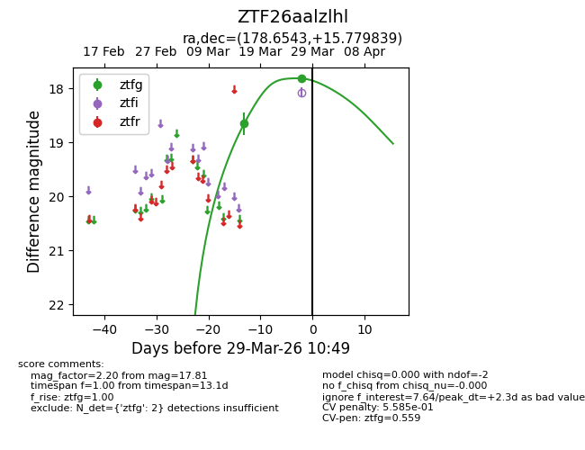
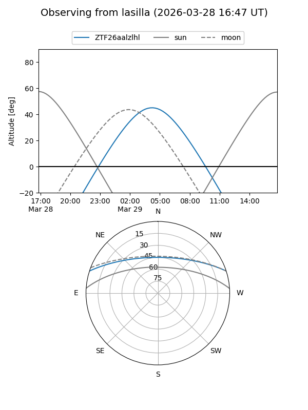
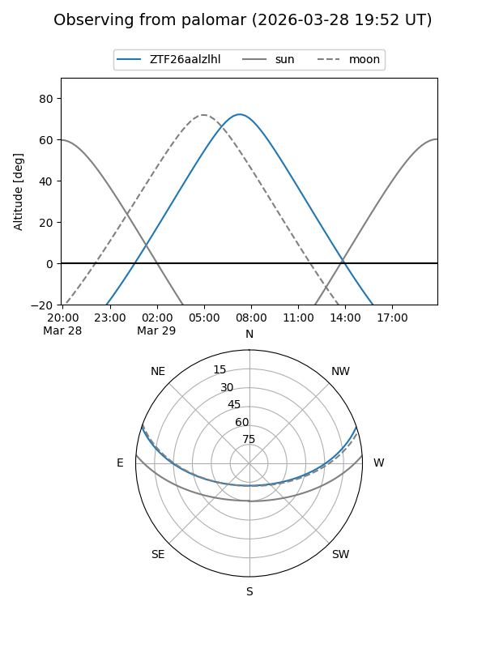

ZTF26aalzlhl
Target ZTF26aalzlhl at 2026-03-29 10:52
Aliases and brokers:
FINK: link
Lasair: link
ALeRCE: link
alt names
ZTF26aalzlhl (ztf,fink_ztf)
Coordinates:
equatorial (ra, dec) = 178.6543,+15.77984
equatorial (HMS+DMS) = 11:54:37.02,+15:46:47.42
galactic (l, b) = (250.7596,+72.60399)
Flags:
likely cv
Photometry:
last ztfg=17.81
2 ztfg detections
Lightcurve

Visibility


Additional plots